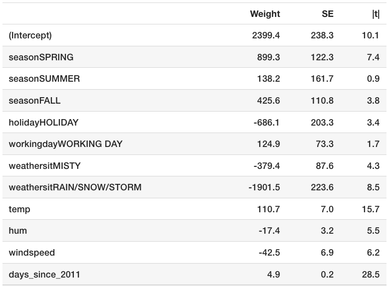
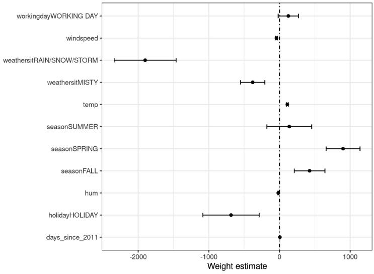
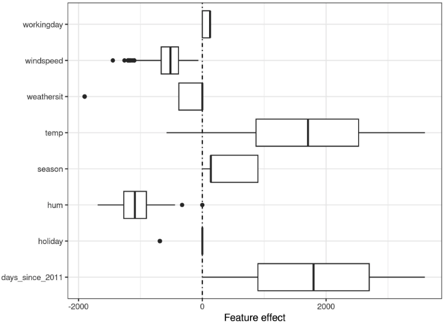
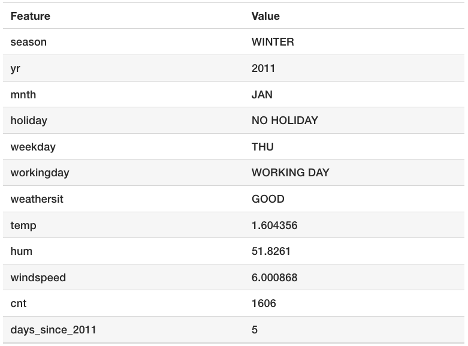
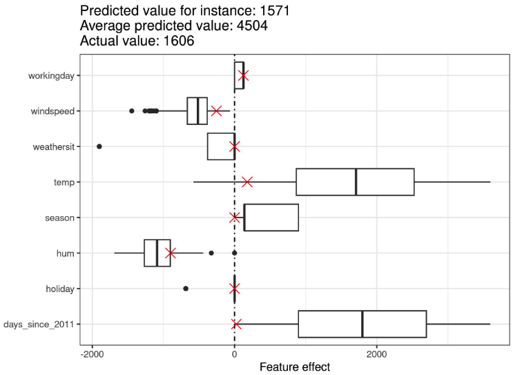
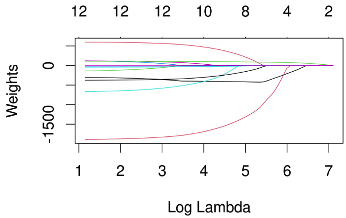
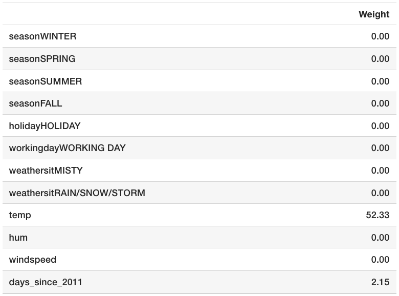
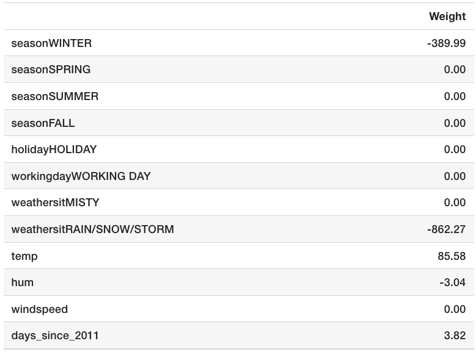

En cours de traduction.
5.1 - Régéression linéaire
Un modèle de régression linéaire prédit la cible comme une somme pondérée des entrées de caractéristiques. La linéarité de la relation apprise facilite l’interprétation. Les modèles de régression linéaire sont utilisés depuis longtemps par les statisticiens, les informaticiens et d’autres personnes qui abordent des problèmes quantitatifs.
Les modèles linéaires peuvent être utilisés pour modéliser la dépendance d’une cible de régression \(y\) par rapport à certaines caractéristiques \(x\). Les relations apprises sont linéaires et peuvent être écrites pour une instance unique \(i\) comme suit :
\[y=\beta_{0}+\beta_{1}x_{1}+\ldots+\beta_{p}x_{p}+\epsilon\]
Le résultat prédit d’une instance est une somme pondérée de ses \(p\) caractéristiques. Les bêtas (\(\beta_{j}\)) représentent les poids ou coefficients des caractéristiques appris. Le premier poids dans la somme (\(\beta_0\)) est appelé l’ordonnée à l’origine (ou intercept) et n’est pas multiplié par une caractéristique. L’epsilon (\(\epsilon\)) représente l’erreur que nous commettons encore, c’est-à-dire la différence entre la prédiction et le résultat réel. Ces erreurs sont supposées suivre une distribution gaussienne, ce qui signifie que nous commettons des erreurs dans les deux directions, négative et positive, et que nous commettons de nombreuses petites erreurs et peu de grandes erreurs.
Diverses méthodes peuvent être utilisées pour estimer le poids optimal. La méthode des moindres carrés ordinaires est généralement utilisée pour trouver les poids qui minimisent les différences au carré entre les résultats réels et les résultats estimés :
\[\hat{\boldsymbol{\beta}}=\arg\!\min_{\beta_0,\ldots,\beta_p}\sum_{i=1}^n\left(y^{(i)}-\left(\beta_0+\sum_{j=1}^p\beta_jx^{(i)}_{j}\right)\right)^{2}\]
Nous n’entrerons pas dans le détail de la manière dont les poids optimaux peuvent être trouvés, mais si cela vous intéresse, vous pouvez lire le chapitre 3.2 du livre “The Elements of Statistical Learning” (Friedman, Hastie et Tibshirani, 2009)1 ou l’une des autres ressources en ligne sur les modèles de régression linéaire.
Le plus grand avantage des modèles de régression linéaire est leur linéarité : cela rend la procédure d’estimation simple et, surtout, ces équations linéaires ont une interprétation facile à comprendre à un niveau modulaire (c’est-à-dire les poids). C’est l’une des principales raisons pour lesquelles le modèle linéaire et tous les modèles similaires sont si répandus dans les domaines académiques tels que la médecine, la sociologie, la psychologie et de nombreux autres domaines de recherche quantitative. Par exemple, dans le domaine médical, il est non seulement important de prédire le résultat clinique d’un patient, mais aussi de quantifier l’influence du médicament et en même temps de prendre en compte le sexe, l’âge et d’autres caractéristiques de manière interprétable.
Les poids estimés sont accompagnés d’intervalles de confiance. Un intervalle de confiance est une plage pour l’estimation du poids qui couvre le poids “réel” avec une certaine confiance. Par exemple, un intervalle de confiance de 95 % pour un poids de 2 pourrait aller de 1 à 3. L’interprétation de cet intervalle serait : si nous répétions l’estimation 100 fois avec des données nouvellement échantillonnées, l’intervalle de confiance inclurait le vrai poids dans 95 cas sur 100, à condition que le modèle de régression linéaire soit le modèle correct pour les données.
Que le modèle soit le “bon” modèle dépend de si les relations dans les données respectent certaines hypothèses, qui sont la linéarité, la normalité, l’homoscédasticité, l’indépendance, la fixité des caractéristiques et l’absence de multicollinéarité.
Linéarité
Le modèle de régression linéaire contraint la prédiction à être une combinaison linéaire des caractéristiques, ce qui est à la fois sa plus grande force et sa plus grande limitation. La linéarité conduit à des modèles interprétables. Les effets linéaires sont faciles à quantifier et à décrire. Ils sont additifs, donc il est facile de séparer les effets. Si vous suspectez des interactions entre caractéristiques ou une association non linéaire d’une caractéristique avec la valeur cible, vous pouvez ajouter des termes d’interaction ou utiliser des splines de régression.
Normalité
On suppose que le résultat cible, étant donné les caractéristiques, suit une distribution normale. Si cette hypothèse est violée, les intervalles de confiance estimés des poids des caractéristiques sont invalides.
Homoscédasticité (variance constante)
On suppose que la variance des termes d’erreur est constante sur tout l’espace des caractéristiques. Supposons que vous voulez prédire la valeur d’une maison en fonction de sa surface habitable en mètres carrés. Vous estimez un modèle linéaire qui suppose que, quelle que soit la taille de la maison, l’erreur autour de la réponse prédite a la même variance. Cette hypothèse est souvent violée dans la réalité. Dans l’exemple de la maison, il est plausible que la variance des termes d’erreur autour du prix prédit soit plus élevée pour les grandes maisons, car les prix sont plus élevés et il y a plus de place pour les fluctuations de prix. Supposons que l’erreur moyenne (différence entre le prix prédit et le prix réel) dans votre modèle de régression linéaire soit de 50 000 euros. Si vous supposez l’homoscédasticité, vous supposez que l’erreur moyenne de 50 000 est la même pour les maisons qui coûtent 1 million et pour celles qui coûtent seulement 40 000. Ceci est déraisonnable car cela signifierait que nous pouvons nous attendre à des prix de maison négatifs.
Indépendance
On suppose que chaque instance est indépendante de toutes les autres. Si vous effectuez des mesures répétées, telles que plusieurs analyses de sang par patient, les points de données ne sont pas indépendants. Pour des données dépendantes, vous avez besoin de modèles spéciaux de régression linéaire, tels que les modèles à effets mixtes ou les GEE (Generalized Estimating Equations). Si vous utilisez le modèle de régression linéaire “normal”, vous pourriez tirer de mauvaises conclusions du modèle.
Caractéristiques fixes
Les caractéristiques d’entrée sont considérées comme “fixes”. Fixe signifie qu’elles sont traitées comme des “constantes données” et non comme des variables statistiques. Cela implique qu’elles sont exemptes d’erreurs de mesure. C’est une hypothèse plutôt irréaliste. Sans cette hypothèse, cependant, vous devriez adapter des modèles d’erreur de mesure très complexes qui tiennent compte des erreurs de mesure de vos caractéristiques d’entrée. Et généralement, vous ne voulez pas faire cela.
Absence de multicollinéarité
Vous ne voulez pas de caractéristiques fortement corrélées, car cela perturbe l’estimation des poids. Dans une situation où deux caractéristiques sont fortement corrélées, il devient problématique d’estimer les poids car les effets des caractéristiques sont additifs et il devient indéterminable à laquelle des caractéristiques corrélées attribuer les effets.
5.1.1 Interprétation
L’interprétation d’un poids dans le modèle de régression linéaire dépend du type de la caractéristique correspondante.
- Caractéristique numérique : Augmenter la caractéristique numérique d’une unité change le résultat estimé de son poids. Un exemple de caractéristique numérique est la taille d’une maison.
- Caractéristique binaire : Une caractéristique qui prend l’une des deux valeurs possibles pour chaque instance. Un exemple est la caractéristique “La maison possède un jardin”. L’une des valeurs est considérée comme la catégorie de référence (dans certains langages de programmation encodée par 0), comme “Pas de jardin”. Changer la caractéristique de la catégorie de référence à l’autre catégorie change le résultat estimé du poids de la caractéristique.
- Caractéristique catégorielle avec plusieurs catégories : Une caractéristique avec un nombre fixe de valeurs possibles. Un exemple est la caractéristique “type de sol”, avec les catégories possibles “moquette”, “stratifié” et “parquet”. Une solution pour gérer de nombreuses catégories est le one-hot-encoding, signifiant que chaque catégorie a sa propre colonne binaire. Pour une caractéristique catégorielle avec \(L\) catégories, vous n’avez besoin que de \(L-1\) colonnes, car la \(L\)-ème colonne aurait des informations redondantes (par exemple, lorsque les colonnes 1 à \(L-1\) ont toutes une valeur de 0 pour une instance, nous savons que la caractéristique catégorielle de cette instance prend la catégorie \(L\)). L’interprétation pour chaque catégorie est alors la même que l’interprétation pour les caractéristiques binaires. Certains langages, comme R, vous permettent de coder les caractéristiques catégorielles de diverses manières, comme décrit plus loin dans ce chapitre.
- Intercept \(\beta_0\) : L’intercept est le poids de la caractéristique pour la “caractéristique constante”, qui est toujours 1 pour toutes les instances. La plupart des logiciels ajoutent automatiquement cette caractéristique “1” pour estimer l’intercept. L’interprétation est : Pour une instance avec toutes les valeurs des caractéristiques numériques à zéro et les valeurs des caractéristiques catégorielles aux catégories de référence, la prédiction du modèle est le poids de l’intercept. L’interprétation de l’intercept n’est généralement pas pertinente car les instances avec toutes les valeurs de caractéristiques à zéro n’ont souvent pas de sens. L’interprétation n’est significative que lorsque les caractéristiques ont été standardisées (moyenne de zéro, écart-type de un). Dans ce cas, l’intercept reflète le résultat prédit d’une instance où toutes les caractéristiques sont à leur valeur moyenne.
L’interprétation des caractéristiques dans le modèle de régression linéaire peut être automatisée en utilisant les modèles de texte suivants.
Interprétation d’une Caractéristique Numérique
Une augmentation de la caractéristique \(x_{k}\) d’une unité augmente la prédiction pour \(y\) de \(\beta_k\) unités lorsque toutes les autres valeurs de caractéristiques restent fixes.
Interprétation d’une Caractéristique Catégorielle
Changer la caractéristique \(x_{k}\) de la catégorie de référence à l’autre catégorie augmente la prédiction pour \(y\) de \(\beta_{k}\) lorsque toutes les autres caractéristiques restent fixes.
Une autre mesure importante pour interpréter les modèles linéaires est la mesure du \(R^2\). Le \(R^2\) vous indique quelle part de la variance totale de votre résultat cible est expliquée par le modèle. Plus le \(R^2\) est élevé, mieux votre modèle explique les données. La formule pour calculer le \(R^2\) est :
\[R^2 = 1 - \frac{SSE}{SST}\]
SSE est la somme des carrés des termes d’erreur :
\[SSE = \sum_{i=1}^n (y^{(i)} - \hat{y}^{(i)})^2\]
SST est la somme des carrés de la variance des données :
\[SST = \sum_{i=1}^n (y^{(i)} - \bar{y})^2\]
Le SSE vous indique combien de variance reste après avoir ajusté le modèle linéaire, mesurée par les différences au carré entre les valeurs cibles prédites et réelles. SST est la variance totale du résultat cible. Le \(R^2\) vous indique quelle part de votre variance peut être expliquée par le modèle linéaire. Le \(R^2\) varie généralement entre 0 pour les modèles où le modèle n’explique pas du tout les données et 1 pour les modèles qui expliquent toute la variance de vos données. Il est également possible que le \(R^2\) prenne une valeur négative sans violer aucune règle mathématique. Cela se produit lorsque SSE est supérieur à SST, ce qui signifie qu’un modèle ne capture pas la tendance des données et s’ajuste aux données pire qu’en utilisant la moyenne de la cible comme prédiction.
Il y a un piège, car le \(R^2\) augmente avec le nombre de caractéristiques dans le modèle, même si elles ne contiennent aucune information sur la valeur cible du tout. Par conséquent, il est préférable d’utiliser le \(R^2\) ajusté, qui tient compte du nombre de caractéristiques utilisées dans le modèle. Son calcul est :
\[\bar{R}^2 = 1 - (1-R^2) \frac{n-1}{n-p-1}\]
où \(p\) est le nombre de caractéristiques et \(n\) le nombre d’instances.
Il n’est pas significatif d’interpréter un modèle avec un \(R^2\) (ajusté) très faible, car un tel modèle n’explique en fait pas beaucoup de la variance. Toute interprétation des poids ne serait pas significative.
Importance des caractéristiques
L’importance d’une caractéristique dans un modèle de régression linéaire peut être mesurée par la valeur absolue de sa statistique t. La statistique t est le poids estimé mis à l’échelle avec son erreur standard.
\[t_{\hat{\beta}_j} = \frac{\hat{\beta}_j}{SE(\hat{\beta}_j)}\]
Examinons ce que cette formule nous indique : L’importance d’une caractéristique augmente avec l’augmentation du poids. Cela a du sens. Plus le poids estimé a de variance (= moins nous sommes certains de la valeur correcte), moins la caractéristique est importante. Cela a également du sens.
5.1.2 - Exemple
Dans cet exemple, nous utilisons le modèle de régression linéaire pour prédire le nombre de vélos loués un jour donné, en fonction des informations météorologiques et calendaires. Pour l’interprétation, nous examinons les poids de régression estimés. Les caractéristiques sont composées de caractéristiques numériques et catégorielles. Pour chaque caractéristique, le tableau montre le poids estimé, l’erreur standard de l’estimation (\(SE\)) et la valeur absolue de la statistique t (\(|t|\)).

Interprétation d’une caractéristique numérique (température) : Une augmentation de la température de 1 degré Celsius augmente le nombre prévu de vélos de r sprintf('%.1f', lm_summary_print['temp', 'Estimate']), lorsque toutes les autres caractéristiques restent fixes.
Interprétation d’une caractéristique catégorielle (“weathersit”) : Le nombre estimé de vélos est r sprintf('%.1f', lm_summary_print['weathersitRAIN/SNOW/STORM', 'Estimate']) inférieur lorsqu’il pleut, neige ou en cas de tempête, par rapport à un temps clément – en supposant à nouveau que toutes les autres caractéristiques restent inchangées. Lorsque le temps est brumeux, le nombre prévu de vélos est r sprintf('%.1f', lm_summary_print['weathersitMISTY', 'Estimate']) inférieur par rapport à un temps clément, à condition que toutes les autres caractéristiques restent les mêmes.
Toutes les interprétations viennent toujours avec la note de bas de page que “toutes les autres caractéristiques restent les mêmes”. Cela est dû à la nature des modèles de régression linéaire. La cible prédite est une combinaison linéaire des caractéristiques pondérées. L’équation linéaire estimée est un hyperplan dans l’espace caractéristique/cible (une simple ligne dans le cas d’une seule caractéristique). Les poids spécifient la pente (gradient) de l’hyperplan dans chaque direction. Le bon côté est que l’additivité isole l’interprétation de l’effet d’une caractéristique individuelle de toutes les autres caractéristiques. Cela est possible parce que tous les effets des caractéristiques (= poids fois la valeur de la caractéristique) dans l’équation sont combinés avec un plus. Sur le mauvais côté des choses, l’interprétation ignore la distribution conjointe des caractéristiques. Augmenter une caractéristique, sans changer une autre, peut conduire à des points de données irréalistes ou du moins improbables. Par exemple, augmenter le nombre de pièces pourrait être irréaliste sans également augmenter la taille d’une maison.
5.1.3 - Interprétation visuelle
Diverses visualisations rendent le modèle de régression linéaire facile et rapide à comprendre pour les humains.
5.1.3.1 - Graphique des poids
Les informations du tableau des poids (estimation des poids et de la variance) peuvent être visualisées dans un graphique des poids. Le graphique suivant montre les résultats du précédent modèle de régression linéaire.

Le graphique des poids montre que le temps pluvieux/neigeux/tempétueux a un fort effet négatif sur le nombre prévu de vélos. Le poids de la caractéristique du jour ouvrable est proche de zéro et zéro est inclus dans l’intervalle de 95 %, ce qui signifie que l’effet n’est pas statistiquement significatif. Certains intervalles de confiance sont très courts et les estimations sont proches de zéro, mais les effets des caractéristiques étaient statistiquement significatifs. La température est un tel candidat. Le problème avec le graphique des poids est que les caractéristiques sont mesurées à différentes échelles. Alors que pour le temps, le poids estimé reflète la différence entre un temps clément et pluvieux/tempétueux/neigeux, pour la température, il reflète uniquement une augmentation de 1 degré Celsius. Vous pouvez rendre les poids estimés plus comparables en mettant à l’échelle les caractéristiques (moyenne nulle et écart-type de un) avant d’ajuster le modèle linéaire.
5.1.3.2 - Graphique de l’effet
Les poids d’un modèle de régression linéaire peuvent être analysés de manière plus significative lorsqu’ils sont multipliés par les valeurs réelles des caractéristiques. Les poids dépendent de l’échelle des caractéristiques et seront différents si vous avez une caractéristique qui mesure, par exemple, la taille d’une personne et que vous passez de mètre à centimètre. Le poids changera, mais les effets réels dans vos données ne changeront pas. Il est également important de connaître la distribution de votre caractéristique dans les données, car si vous avez une très faible variance, cela signifie que presque toutes les instances ont une contribution similaire de cette caractéristique. Le graphique des effets peut vous aider à comprendre combien la combinaison du poids et de la caractéristique contribue aux prédictions dans vos données. Commencez par calculer les effets, qui sont le poids par caractéristique multiplié par la valeur de la caractéristique d’une instance :
\[\text{effect}_{j}^{(i)}=w_{j}x_{j}^{(i)}\]
Les effets peuvent être visualisés avec des diagrammes à boîtes. La boîte dans un diagramme à boîtes contient la plage d’effets pour la moitié des données (quantiles d’effets de 25 % à 75 %). La ligne verticale dans la boîte est l’effet médian, c’est-à-dire que 50 % des instances ont un effet inférieur et l’autre moitié un effet supérieur sur la prédiction. Les points sont des valeurs aberrantes, définies comme des points qui sont plus de 1,5 * IQR (intervalle interquartile, c’est-à-dire la différence entre le premier et le troisième quartile) au-dessus du troisième quartile ou moins de 1,5 * IQR en dessous du premier quartile. Les deux lignes horizontales, appelées moustaches inférieure et supérieure, relient les points en dessous du premier quartile et au-dessus du troisième quartile qui ne sont pas des valeurs aberrantes. S’il n’y a pas de valeurs aberrantes, les moustaches s’étendront jusqu’aux valeurs minimales et maximales.
Les effets des caractéristiques catégorielles peuvent être résumés dans un seul diagramme à boîtes, par rapport au graphique des poids, où chaque catégorie a sa propre ligne.

Si nous moyennons les prédictions pour les instances des données d’entraînement, nous obtenons une moyenne de r round(predictions_mean, 0). En comparaison, la prédiction de l’instance r i-ème est faible, puisque seulement r round(pred_i, 0) locations de vélos sont prédites. Le graphique des effets révèle la raison. Les diagrammes à boîtes montrent les distributions des effets pour toutes les instances du jeu de données, les croix montrent les effets pour l’instance r i-ème. L’instance r i-ème a un faible effet de température car ce jour-là la température était de r round(X[i, 'temp'],0) degrés, ce qui est faible par rapport à la plupart des autres jours (et rappelons que le poids de la caractéristique de température est positif). De plus, l’effet de la caractéristique de tendance “jours_depuis_2011” est petit par rapport aux autres instances de données car cette instance date du début de 2011 (r X[i, 'days_since_2011'] jours) et la caractéristique de tendance a également un poids positif.
5.1.4 - Expliquer les prédictions individuelles
De combien chaque caractéristique d’une instance a-t-elle contribuée à la prédiction ? La contribution spécifique de chaque caractéristique d’une instance à la prédiction peut être évaluée en calculant les effets pour cette instance. Une interprétation des effets spécifiques à l’instance n’a de sens qu’en comparaison avec la distribution de l’effet pour chaque caractéristique. Nous souhaitons expliquer la prédiction du modèle linéaire pour l’instance r i-ème du jeu de données sur les locations de vélos. L’instance présente les valeurs de caractéristiques suivantes.

Pour obtenir les effets des caractéristiques de cette instance, nous devons multiplier ses valeurs de caractéristiques par les poids correspondants du modèle de régression linéaire. Pour la valeur “r df["workingday", "value"]” de la caractéristique “r df["workingday", "feature"]”, l’effet est r round(lm_summary_print[paste(df["workingday", "feature"], df["workingday", "value"], sep = ""), "Estimate"], 1). Pour une température de r round(as.numeric(as.character(df["temp", "value"])), 1) degrés Celsius, l’effet est r round(as.numeric(as.character(df["temp", "value"])) * lm_summary_print[as.character(df["temp", "feature"]), "Estimate"], 1). Nous ajoutons ces effets individuels sous forme de croix au graphique des effets, ce qui nous montre la distribution des effets dans les données. Cela nous permet de comparer les effets individuels à la distribution des effets dans les données.

Si nous moyennons les prédictions pour les instances des données d’entraînement, nous obtenons une moyenne de r round(predictions_mean, 0). En comparaison, la prédiction de l’instance r i-ème est faible, puisque seulement r round(pred_i, 0) locations de vélos sont prédites. Le graphique des effets révèle la raison. Les diagrammes à boîtes montrent les distributions des effets pour toutes les instances du jeu de données, les croix montrent les effets pour l’instance r i-ème. L’instance r i-ème a un faible effet de température car ce jour-là la température était de r round(X[i, 'temp'],0) degrés, ce qui est faible par rapport à la plupart des autres jours (et rappelons que le poids de la caractéristique de température est positif). De plus, l’effet de la caractéristique de tendance “jours_depuis_2011” est petit par rapport aux autres instances de données car cette instance date du début de 2011 (r X[i, 'days_since_2011'] jours) et la caractéristique de tendance a également un poids positif.
5.1.5 - Encoder les caractéristiques modales
Il existe plusieurs manières de coder une caractéristique catégorielle, et le choix influence l’interprétation des poids.
La norme dans les modèles de régression linéaire est le codage de traitement, qui est suffisant dans la plupart des cas. Utiliser différents codages revient à créer différentes matrices (de conception) à partir d’une seule colonne avec la caractéristique catégorielle. Cette section présente trois codages différents, mais il en existe beaucoup d’autres. L’exemple utilisé comporte six instances et une caractéristique catégorielle avec trois catégories. Pour les deux premières instances, la caractéristique prend la catégorie A ; pour les instances trois et quatre, la catégorie B ; et pour les deux dernières instances, la catégorie C.
Codage de traitement
Dans le codage de traitement, le poids par catégorie est la différence estimée dans la prédiction entre la catégorie correspondante et la catégorie de référence. L’intercept du modèle linéaire est la moyenne de la catégorie de référence (lorsque toutes les autres caractéristiques restent les mêmes). La première colonne de la matrice de conception est l’intercept, qui est toujours 1. La deuxième colonne indique si l’instance i appartient à la catégorie B, la troisième colonne indique si elle appartient à la catégorie C. Il n’est pas nécessaire d’avoir une colonne pour la catégorie A, car cela surdéterminerait l’équation linéaire et il ne serait pas possible de trouver une solution unique pour les poids. Il suffit de savoir qu’une instance n’appartient ni à la catégorie B ni à la catégorie C.
Matrice des caractéristiques : \[\begin{pmatrix}1&0&0\\1&0&0\\1&1&0\\1&1&0\\1&0&1\\1&0&1\\\end{pmatrix}\]
Codage des effets
Le poids par catégorie est la différence estimée de y entre la catégorie correspondante et la moyenne globale (à condition que toutes les autres caractéristiques soient zéro ou la catégorie de référence). La première colonne est utilisée pour estimer l’intercept. Le poids \(\beta_{0}\) associé à l’intercept représente la moyenne globale et \(\beta_{1}\), le poids pour la deuxième colonne, est la différence entre la moyenne globale et la catégorie B. L’effet total de la catégorie B est \(\beta_{0}+\beta_{1}\). L’interprétation pour la catégorie C est équivalente. Pour la catégorie de référence A, \(-(\beta_{1}+\beta_{2})\) est la différence par rapport à la moyenne globale et \(\beta_{0}-(\beta_{1}+\beta_{2})\) l’effet global.
Matrice des caractéristiques : \[\begin{pmatrix}1&-1&-1\\1&-1&-1\\1&1&0\\1&1&0\\1&0&1\\1&0&1\\\end{pmatrix}\]
Codage indicateur (Dummy coding)
Le \(\beta\) par catégorie est la valeur moyenne estimée de \(y\) pour chaque catégorie (à condition que toutes les autres valeurs de caractéristiques soient zéro ou la catégorie de référence). Notez que l’intercept a été omis ici afin qu’une solution unique puisse être trouvée pour les poids du modèle linéaire. Une autre manière de pallier ce problème de multicollinéarité est d’exclure l’une des catégories.
Matrice des caractéristiques : \[\begin{pmatrix}1&0&0\\1&0&0\\0&1&0\\0&1&0\\0&0&1\\0&0&1\\\end{pmatrix}\]
Si vous souhaitez approfondir les différents codages des caractéristiques catégorielles, consultez cette page de vue d’ensemble et ce billet de blog.
5.1.6 - Est-ce que les modèles linéaires produisent des bonnes explications ?
Au regard des attributs qui constituent une bonne explication, tels que présentés dans le chapitre sur les explications conviviales pour l’être humain, les modèles linéaires ne créent pas les meilleures explications. Ils sont contrastifs, mais l’instance de référence est un point de données où toutes les caractéristiques numériques sont à zéro et les caractéristiques catégorielles sont à leurs catégories de référence. Il s’agit généralement d’une instance artificielle et dénuée de sens, peu susceptible de se produire dans vos données ou dans la réalité. Il y a une exception : si toutes les caractéristiques numériques sont centrées sur la moyenne (caractéristique moins la moyenne de la caractéristique) et que toutes les caractéristiques catégorielles sont codées par effet, l’instance de référence est le point de données où toutes les caractéristiques prennent la valeur moyenne de la caractéristique. Cela peut aussi être un point de données inexistant, mais il peut au moins être plus probable ou plus significatif. Dans ce cas, les poids multipliés par les valeurs des caractéristiques (effets des caractéristiques) expliquent la contribution au résultat prédit en contraste avec l’“instance moyenne”. Un autre aspect d’une bonne explication est la sélectivité, qui peut être atteinte dans les modèles linéaires en utilisant moins de caractéristiques ou en entraînant des modèles linéaires parcimonieux. Mais par défaut, les modèles linéaires ne créent pas d’explications sélectives. Les modèles linéaires créent des explications véridiques, tant que l’équation linéaire est un modèle approprié pour la relation entre les caractéristiques et le résultat. Plus il y a de non-linéarités et d’interactions, moins le modèle linéaire sera précis et moins les explications seront véridiques. La linéarité rend les explications plus générales et plus simples. La nature linéaire du modèle, je crois, est le principal facteur pour lequel les gens utilisent des modèles linéaires pour expliquer les relations.
5.1.7 - Modèles Linéaires Parcimonieux
Les exemples de modèles linéaires que j’ai choisis semblent tous bien ordonnés, n’est-ce pas ? Mais dans la réalité, vous pourriez ne pas avoir juste une poignée de caractéristiques, mais des centaines ou des milliers. Et vos modèles de régression linéaire ? L’interprétabilité se dégrade. Vous pourriez même vous retrouver dans une situation où il y a plus de caractéristiques que d’instances, et vous ne pourriez pas du tout ajuster un modèle linéaire standard. La bonne nouvelle est qu’il existe des moyens d’introduire de la parcimonie (= peu de caractéristiques) dans les modèles linéaires.
5.1.7.1 - Lasso
Le Lasso est une manière automatique et pratique d’introduire de la parcimonie dans le modèle de régression linéaire. Lasso signifie “Least Absolute Shrinkage and Selection Operator” (opérateur de réduction et de sélection absolue minimale) et, lorsqu’il est appliqué dans un modèle de régression linéaire, effectue une sélection de caractéristiques et une régularisation des poids des caractéristiques sélectionnées. Considérons le problème de minimisation que les poids optimisent :
\[min_{\boldsymbol{\beta}}\left(\frac{1}{n}\sum_{i=1}^n(y^{(i)}-x_i^T\boldsymbol{\beta})^2\right)\]
Lasso ajoute un terme à ce problem d’optimisation.
\[min_{\boldsymbol{\beta}}\left(\frac{1}{n}\sum_{i=1}^n(y^{(i)}-x_{i}^T\boldsymbol{\beta})^2+\lambda||\boldsymbol{\beta}||_1\right)\]
Le terme \(\|\boldsymbol{\beta}\|_1\), la norme L1 du vecteur de caractéristiques, conduit à une pénalisation des poids importants. Comme la norme L1 est utilisée, de nombreux poids reçoivent une estimation de 0 et les autres sont réduits. Le paramètre lambda \((\lambda)\) contrôle la force de l’effet de régularisation et est généralement ajusté par validation croisée. Surtout lorsque lambda est grand, de nombreux poids deviennent 0. Les poids des caractéristiques peuvent être visualisés en fonction du terme de pénalité lambda. Chaque poids de caractéristique est représenté par une courbe dans la figure suivante.

Quelle valeur devrions-nous choisir pour lambda ? Si vous voyez le terme de pénalisation comme un paramètre de réglage, alors vous pouvez trouver le lambda qui minimise l’erreur du modèle avec une validation croisée. Vous pouvez également considérer lambda comme un paramètre pour contrôler l’interprétabilité du modèle. Plus la pénalisation est grande, moins il y a de caractéristiques présentes dans le modèle (car leurs poids sont nuls) et mieux le modèle peut être interprété.
Exemple avec Lasso
Nous allons prédire les locations de vélos en utilisant Lasso. Nous fixons le nombre de caractéristiques que nous voulons avoir dans le modèle à l’avance. Commençons d’abord par fixer le nombre à 2 caractéristiques :

Les deux premières caractéristiques avec des poids non nuls dans le chemin Lasso sont la température (“temp”) et la tendance temporelle (“days_since_2011”).
Maintenant, sélectionnons 5 caractéristiques :

Notez que les poids pour “temp” et “days_since_2011” diffèrent du modèle avec deux caractéristiques. La raison en est qu’en diminuant lambda, même les caractéristiques qui sont déjà “dans” le modèle sont moins pénalisées et peuvent obtenir un poids absolu plus grand. L’interprétation des poids Lasso correspond à l’interprétation des poids dans le modèle de régression linéaire. Vous devez seulement faire attention à savoir si les caractéristiques sont standardisées ou non, car cela affecte les poids. Dans cet exemple, les caractéristiques ont été standardisées par le logiciel, mais les poids ont été automatiquement retransformés pour nous afin de correspondre aux échelles des caractéristiques originales.
Autres méthodes pour la parcimonie dans les modèles linéaires
Un large éventail de méthodes peut être utilisé pour réduire le nombre de caractéristiques dans un modèle linéaire.
Méthodes de prétraitement :
- Sélection manuelle des caractéristiques : Vous pouvez toujours utiliser des connaissances expertes pour sélectionner ou écarter certaines caractéristiques. Le grand inconvénient est que cela ne peut pas être automatisé et vous devez avoir accès à quelqu’un qui comprend les données.
- Sélection univariée : Un exemple est le coefficient de corrélation. Vous ne considérez que les caractéristiques qui dépassent un certain seuil de corrélation entre la caractéristique et la cible. L’inconvénient est qu’il ne considère que les caractéristiques individuellement. Certaines caractéristiques peuvent ne pas montrer de corrélation avant que le modèle linéaire n’ait pris en compte d’autres caractéristiques. Vous manquerez celles-ci avec les méthodes de sélection univariée.
Méthodes séquentielles :
- Sélection progressive (Forward selection) : Ajustez le modèle linéaire avec une caractéristique. Faites cela avec chaque caractéristique. Sélectionnez le modèle qui fonctionne le mieux (par exemple, R-carré le plus élevé). Maintenant, à nouveau, pour les caractéristiques restantes, ajustez différentes versions de votre modèle en ajoutant chaque caractéristique à votre modèle actuel le meilleur. Sélectionnez celui qui offre les meilleures performances. Continuez jusqu’à ce qu’un critère soit atteint, comme le nombre maximum de caractéristiques dans le modèle.
- Sélection régressive (Backward selection) : Similaire à la sélection progressive. Mais au lieu d’ajouter des caractéristiques, commencez avec le modèle qui contient toutes les caractéristiques et essayez de déterminer quelle caractéristique vous devez retirer pour obtenir l’augmentation de performance la plus élevée. Répétez cela jusqu’à ce qu’un critère d’arrêt soit atteint.
Je recommande d’utiliser Lasso, car il peut être automatisé, prend en compte toutes les caractéristiques simultanément et peut être contrôlé via lambda. Il fonctionne également pour le modèle de régression logistique pour la classification.
5.1.8 - Avantages
La modélisation des prédictions comme une somme pondérée rend transparente la manière dont les prédictions sont produites. Et avec Lasso, nous pouvons nous assurer que le nombre de caractéristiques utilisées reste petit.
De nombreuses personnes utilisent des modèles de régression linéaire. Cela signifie que dans de nombreux endroits, ils sont acceptés pour la modélisation prédictive et l’inférence. Il existe un haut niveau d’expérience et d’expertise collective, y compris des matériaux pédagogiques sur les modèles de régression linéaire et des implémentations logicielles. La régression linéaire peut être trouvée dans R, Python, Java, Julia, Scala, Javascript, …
Mathématiquement, il est simple d’estimer les poids et vous avez une garantie de trouver des poids optimaux (à condition que toutes les hypothèses du modèle de régression linéaire soient satisfaites par les données).
Avec les poids, vous obtenez également des intervalles de confiance, des tests et une théorie statistique solide. Il existe également de nombreuses extensions du modèle de régression linéaire (voir chapitre sur GLM, GAM et plus).
5.1.9 - Inconvénients
Les modèles de régression linéaire ne peuvent représenter que des relations linéaires, c’est-à-dire une somme pondérée des caractéristiques d’entrée. Chaque non-linéarité ou interaction doit être créée manuellement et explicitement fournie au modèle comme une caractéristique d’entrée.
Les modèles linéaires sont également souvent moins performants en termes de prédiction, car les relations qui peuvent être apprises sont très limitées et simplifient généralement de manière excessive la complexité de la réalité.
L’interprétation d’un poids peut être contre-intuitive car elle dépend de toutes les autres caractéristiques. Une caractéristique ayant une forte corrélation positive avec le résultat \(y\) et une autre caractéristique peut obtenir un poids négatif dans le modèle linéaire, car, étant donné l’autre caractéristique corrélée, elle est négativement corrélée avec \(y\) dans l’espace multidimensionnel. Des caractéristiques complètement corrélées rendent même impossible de trouver une solution unique pour l’équation linéaire. Un exemple : Vous avez un modèle pour prédire la valeur d’une maison et vous avez des caractéristiques comme le nombre de pièces et la taille de la maison. La taille de la maison et le nombre de pièces sont fortement corrélés : plus une maison est grande, plus elle a de pièces. Si vous prenez ces deux caractéristiques dans un modèle linéaire, il se peut que la taille de la maison soit le meilleur prédicteur et obtienne un poids positif important. Le nombre de pièces peut finir par obtenir un poids négatif, car, à taille de maison égale, augmenter le nombre de pièces pourrait la rendre moins précieuse ou l’équation linéaire devient moins stable lorsque la corrélation est trop forte.
Notes de bas de page
Friedman, Jerome, Trevor Hastie, and Robert Tibshirani. “The elements of statistical learning”. hastie.su.domains/ElemStatLearn (2009).↩︎